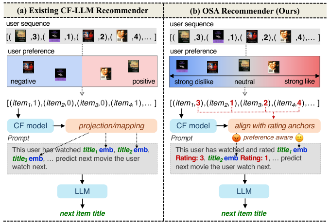
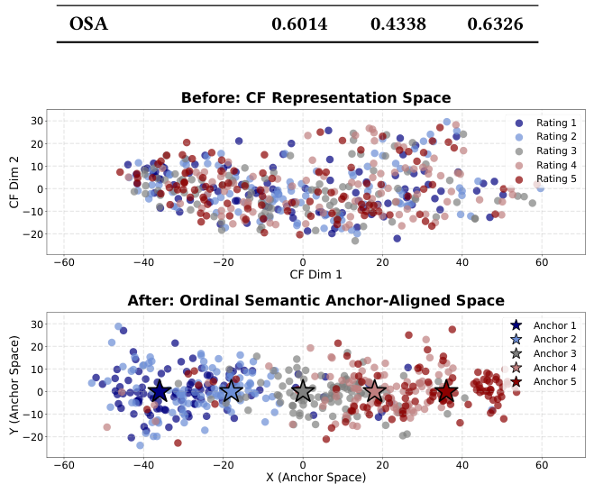
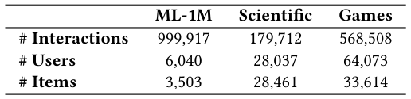
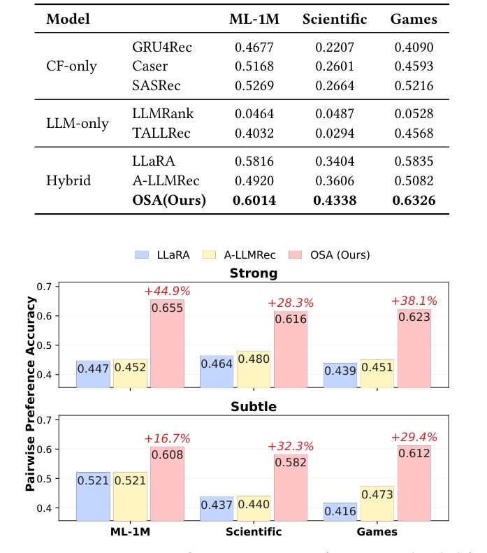
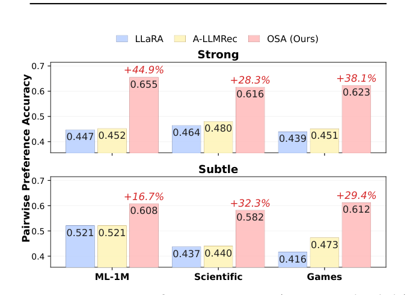
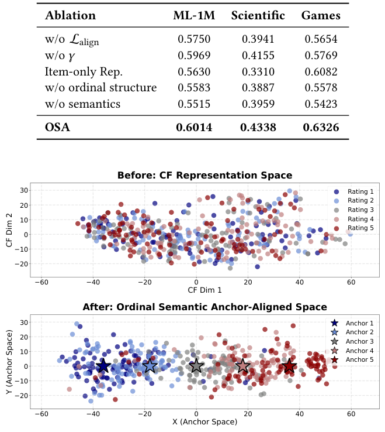
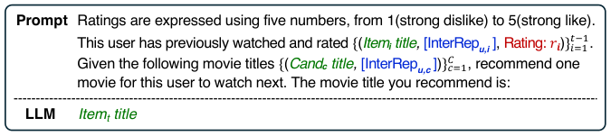

Every Preference Has Its Strength: Injecting Ordinal Semantics into LLM-Based Recommenders (每种偏好都有其强度：向基于LLM的推荐器注入序数语义)
- 会议/期刊: SIGIR 2026 (第49届国际ACM SIGIR会议，Melbourne, VIC, Australia)
- 推荐链路定位: 精排 / 序列下一项预测 (Next-Item Prediction，候选集单选择)
- 研究方向: 大语言模型推荐 (LLM4Rec) / 序列与会话推荐
- 论文原文: https://arxiv.org/abs/2605.10323v1
- 开源代码: https://github.com/zzzzzioni/OSA
TL;DR (核心速览)
针对现有 CF–LLM 混合推荐框架将显式评分二值化/隐式化、丢弃偏好强度序数结构的问题，本文提出序数语义锚定 (OSA)：把评分等级 "1"–"5" 的 LLM 词元嵌入作为固定语义锚点，将交互级 CF 表征投影到 LLM 隐空间并按偏好强度加权对齐。在 ML-1M / Scientific / Games 三数据集、留一法 + 1 正 19 负采样协议下，Hit@1 达 0.6014/0.4338/0.6326，成对偏好准确率相对最佳基线最高提升 44.9%。
Background & Motivation (背景与动机)
- 领域背景与主流范式: 当前 LLM4Rec 的主流路线之一是 hybrid prompting（混合提示），即把协同过滤 (CF) 模型的用户/物品表征通过投影器映射进 LLM 隐空间，作为额外 token 或软提示注入，使 LLM 同时利用文本语义与协同信号。代表工作包括 LLaRA（投影 CF 表征为软 token）、A-LLMRec（对齐模态与 CF 表征）、CoLLM（协同嵌入注入）、以及蒸馏/二值化路线。
- 现有方法局限 (Limitations of Prior Work):
- 评分信息坍缩：绝大多数 CF–LLM 框架用评分阈值把显式评分二值化，或直接退化为 positive-only 隐式反馈，丢弃了评分所承载的"喜欢/不喜欢 + 强度"双重信息。
- 粗粒度偏好不足以区分近邻候选：二值化信号足以识别"总体喜欢的物品"，但难以在高度相关的候选之间做细微区分（如 4 星 vs 5 星）。
- LLM 被当作通用预测器而非语义模型：LLM 本身擅长建模分级语义与细粒度比较，但现有监督信号未提供这种机会。
- 核心挑战 (Key Challenge): 为什么简单拼接评分特征不行？因为评分若仅作为数值特征拼接，缺乏与 LLM 语义空间的对应关系；而若继续二值化，则序数结构（1<2<3<4<5 的相对顺序与强度）在表征空间中完全丢失。关键是要在注入协同信号的同时保留序数语义。
- 核心洞察与切入点 (Key Insight): 作者观察到 LLM 对有序数字词元（"1"…"5"）本身具有先验的序数语义理解。因此可将这些数字词元的词元嵌入直接作为固定语义锚点，把交互级 CF 表征"锚定"到对应评分等级的锚点上，并以强度感知权重（极端评分对齐更紧）施加约束，从而在 LLM 隐空间中诱导出序数结构。图1 对比了现有 CF–LLM 推荐器（仅正/负二值偏好）与 OSA（强厌恶—中性—强喜欢的分级偏好）的差异。

Problem Formulation & Method (问题定义与方法架构)
1. 符号定义与输入表征 (Notations & Input Representations)
- 用户集 \(\mathcal{U}\)、物品集 \(\mathcal{I}\)；用户 \(u\) 在时刻 \(t\) 之前的历史交互 \(\mathcal{H}^{<t}_u=(i_1,\dots,i_{t-1})\)，\(i_k\in\mathcal{I}\)。
- CF 编码器（SASRec）输出用户表征 \(\mathbf{u}^{<t}=f_{\text{CF}}(\mathcal{H}^{<t}_u)\in\mathbb{R}^{d_{\text{rec}}}\)，物品嵌入表给出 \(\mathbf{e}_i\in\mathbb{R}^{d_{\text{rec}}}\)，本文设 \(d_{\text{rec}}=64\)。
- 交互级表征 \(\mathbf{z}_{u,i}=[\mathbf{u}^{<t-1};\mathbf{e}_i]\in\mathbb{R}^{2d_{\text{rec}}}\)，对应显式评分 \(r_{u,i}\in\{1,\dots,5\}\)。
- 投影器 \(f_{\text{proj}}:\mathbb{R}^{2d_{\text{rec}}}\to\mathbb{R}^{d_{\text{llm}}}\)（两层 MLP + GELU），得 \(\mathbf{v}_{u,i}=f_{\text{proj}}(\mathbf{z}_{u,i})\)。
- 锚点：评分等级 \(r\) 的数字文本词元在预训练 LLM 中的词元嵌入 \(\mathbf{a}_r\in\mathbb{R}^{d_{\text{llm}}}\)，\(r\in\{1,\dots,5\}\)，固定不训练。
- 输出：从候选集 \(\mathcal{C}=\{c_1,\dots,c_C\}\subseteq\mathcal{I}\) 中生成下一物品标题。
2. 整体流水线 (Overall Architecture)
数据流：用户历史序列 → SASRec 编码得用户表征与物品嵌入 → 拼接为交互级表征 \(\mathbf{z}_{u,i}\) → 两层 MLP 投影到 LLM 维度得 \(\mathbf{v}_{u,i}\) → 与评分数字词元锚点 \(\mathbf{a}_{r_{u,i}}\) 做强度感知对齐 → 混合提示（历史交互 + 候选集 + [InterEmb] 占位）送入 LoRA 微调的 LLaMA 3.2 (3B-Instruct) → 自回归生成下一物品标题。图2 给出 OSA 总览。

flowchart TD
A["输入层: 用户历史序列 H_u^<t 与显式评分 r"] --> B["CF 编码器 SASRec: 用户表征 u + 物品嵌入 e_i"]
B --> C["交互级表征 z = [u; e_i] ∈ R^128"]
C --> D["投影器 f_proj (2层MLP+GELU) → v ∈ R^d_llm"]
D --> E["序数语义锚定: 与评分词元锚点 a_r 做强度感知对齐 L_align"]
D --> F["混合提示构造: 历史交互[InterEmb]+候选集"]
E --> G["LLaMA 3.2 (3B) + LoRA 自回归生成"]
F --> G
G --> H["输出: 下一物品标题"]3. 核心模块设计与数学原理 (Key Designs & Formulations)
(1) 交互级表征 (Interaction Representation)：不同于以往在用户级或物品级做对齐，OSA 在交互级构造 \(\mathbf{z}_{u,i}=[\mathbf{u}^{<t-1};\mathbf{e}_i]\)，使每个表征与单次交互所表达的偏好强度一一对应。这是后续强度感知对齐的前提——只有交互级粒度才能承载"这次交互是几星"的信息。
(2) 序数语义锚点 (Ordinal Semantic Anchors)：将评分等级 \(r\) 表示为数字文本词元（"1"…"5"），从冻结 LLM 的词嵌入表中取出 \(\mathbf{a}_r\) 作为固定锚点。物理直觉：LLM 预训练语料中数字词元天然携带有序尺度语义，锚点因此提供共享、可解释、且与 LLM 语义空间同源的参考系，无需额外学习。
(3) 强度感知对齐 (Strength-Aware Alignment)：对齐损失为 $\(\mathcal{L}_{\text{align}}=\mathbb{E}_{(u,i)}\Big[\big(1-\cos(\mathbf{v}_{u,i},\mathbf{a}_{r_{u,i}})\big)\cdot w(r_{u,i})\Big],\)$ 其中强度权重 $\(w(r)=1+\gamma\,|r-3|,\quad \gamma>0\ (\text{本文}\ \gamma=0.5).\)$ 该设计使极端评分（1 星、5 星）的交互被更强地拉向其锚点，中性评分（3 星）约束较弱。直觉是极端评分表达更确定、更强烈的人类偏好信号，应更紧地对齐；同时不同等级锚点之间保持分离，从而在隐空间中诱导出序数结构而非坍缩为粗相似群。图5 的 t-SNE 可视化显示：对齐前交互表征相对评分无清晰组织，对齐后按锚点序数结构排布，相邻评分更近、远距评分少重叠。

4. 训练目标、负采样与推理复杂度 (Optimization, Negative Sampling & Complexity)
- 损失函数: 总目标为自回归生成损失 + 对齐损失： $\(\max_{\theta}\ \sum_{u\in\mathcal{U}}\sum_{k=1}^{|y_{u,i_t}|}\log P_{\theta,\Theta}\big(y^{(k)}_{u,i_t}\mid \mathbf{p}_u, y^{(<k)}_{u,i_t}\big)\ -\ \lambda_{\text{align}}\,\mathcal{L}_{\text{align}},\)$ 其中 \(\theta\) 为可学习参数（投影器 + LoRA），\(\Theta\) 为冻结 LLM；\(\lambda_{\text{align}}=0.5\)，\(\gamma=0.5\)。原文未报告对齐损失中的温度系数（该损失为余弦对齐，非 InfoNCE，无 \(\tau\)）。
- 训练负采样策略: 训练阶段为生成式下一项预测（teacher forcing），无显式负采样；评估阶段采用 1 个真值 + 19 个随机采样负例的候选集。
- 时间与空间复杂度: 原文未报告具体训练耗时、单次推理延迟 (ms/request) 与峰值显存。定性上，OSA 相比 LLaRA/A-LLMRec 仅增加一个余弦对齐项（对固定锚点，无额外可训练参数），推理阶段与标准 hybrid prompting 一致（候选集内生成标题，非全库 ANN 检索）。
Experimental Setup & Evaluation Protocol (实验设置与评估协议)
- 数据集统计与预处理: 三个真实数据集，均提供 1–5 星显式评分。原文表1 统计如下（原文未说明 5-core 等过滤规则细节）：

| 数据集 (Dataset) | 用户数 (#Users) | 物品数 (#Items) | 交互数 (#Interactions) | 稀疏度/密度 (Sparsity) | 模态/辅助特征说明 |
|---|---|---|---|---|---|
| ML-1M | 6,040 | 3,503 | 999,917 | 原文未报告 | 电影标题文本 + 1–5 星评分 |
| Scientific (Amazon) | 28,037 | 28,461 | 179,712 | 原文未报告 | 商品标题文本 + 1–5 星评分 |
| Games (Amazon) | 64,073 | 33,614 | 568,508 | 原文未报告 | 商品标题文本 + 1–5 星评分 |
- 数据划分方式 (Splitting Strategy): Leave-One-Out (留一法)——最近一次交互作测试、次近一次作验证、其余作训练。由于按用户时间顺序切分，未来信息泄露风险较低；但需注意候选负例为随机采样，未做时间戳约束。
- 排名评测协议 (Ranking Protocol): Sampled Ranking（采样负例排序）——1 个真值物品 + 19 个随机采样负例，模型观察最多 20 条历史交互，从候选集中单选下一物品。非 Full-Ranking，因此 Hit@1 数值不可与全库排序结果直接比较。
- 评价指标与显著性检验: 主指标 Hit@1（单选择任务）；辅以成对偏好准确率（采样 \(\min(1000, 0.05|\mathcal{U}|)\) 个未见用户，构造一级评分差对：Strong = {1 vs 2, 4 vs 5}，Subtle = {2 vs 3, 3 vs 4}）。Embedding 维度 \(d_{\text{rec}}=64\) 对所有混合基线统一（SASRec 共享 CF 编码器），LLM 统一为 LLaMA 3.2 (3B-Instruct)。原文未报告多随机种子方差与配对显著性检验。
Key Experimental Results (核心实验结果)
1. 主实验对比 (Main Results)
表2 报告下一项预测 Hit@1。混合 CF–LLM 模型整体优于 CF-only 与 LLM-only 基线；OSA 在三数据集均取得最佳。

| 数据集 | 指标 | 传统/协同过滤基线 (SASRec 最强) | 混合 CF–LLM 最强基线 | 本文方法 (Ours) | 相对提升 (Improv.) |
|---|---|---|---|---|---|
| ML-1M | Hit@1 | 0.5269 (SASRec) | 0.5816 (LLaRA) | 0.6014 | +3.40% |
| Scientific | Hit@1 | 0.2664 (SASRec) | 0.3606 (A-LLMRec) | 0.4338 | +20.30% |
| Games | Hit@1 | 0.5216 (SASRec) | 0.5835 (LLaRA) | 0.6326 | +8.41% |
注：LLM-only 基线表现分化明显——LLMRank 在三数据集仅 0.0464/0.0487/0.0528（接近随机），TALLRec 在 Scientific 仅 0.0294，说明纯文本 LLM 推荐在无协同信号时严重不足。
成对偏好评估（图4）：OSA 在所有数据集、Strong 与 Subtle 两种设置下均大幅领先 LLaRA 与 A-LLMRec。Strong 设置下相对最佳基线提升最高 +44.9%（ML-1M），Scientific +28.3%、Games +38.1%；Subtle 设置下提升 +16.7%/+32.3%/+29.4%。原文指出二值化基线在 Subtle 设置下常收敛至 0.5（等同随机猜测），印证保留序数强度对区分细微偏好差异的关键性。

2. 消融实验与控制变量分析 (Ablation Study)
表3 消融（Hit@1）：

| 变体 | ML-1M | Scientific | Games |
|---|---|---|---|
| w/o \(\mathcal{L}_{\text{align}}\) | 0.5750 | 0.3941 | 0.5654 |
| w/o \(\gamma\) | 0.5969 | 0.4155 | 0.5769 |
| Item-only Rep. | 0.5630 | 0.3310 | 0.6082 |
| w/o ordinal structure | 0.5583 | 0.3887 | 0.5578 |
| w/o semantics | 0.5515 | 0.3959 | 0.5423 |
| OSA | 0.6014 | 0.4338 | 0.6326 |
- 贡献最大：移除对齐目标（w/o \(\mathcal{L}_{\text{align}}\)）使性能回落至混合基线水平，说明锚定对齐是核心；破坏序数结构（置换锚点顺序）与移除语义（随机初始化锚点替代）均导致显著下降，证明"序数性"与"LLM 语义先验"两者缺一不可。
- 交互级表征：Item-only Rep.（用 \(\mathbf{e}_i\) 替代 \(\mathbf{z}_{u,i}\)）在 ML-1M 与 Scientific 上明显下降（0.5630/0.3310），验证交互级粒度的重要性；Games 上该变体（0.6082）仍低于完整 OSA。
- 强度权重：w/o \(\gamma\) 下降幅度较小但一致，说明强调极端偏好有增益。
- 控制变量说明：原文未明确报告参数量对齐或图拓扑度数匹配等控制变量消融。
3. 稀疏度/冷启动分桶与超参敏感度 (Sparsity Buckets & Hyperparameters)
- 用户/物品交互频次分桶表现: 原文未报告长尾/冷启动分桶实验。
- 关键超参数敏感度: 原文仅给出设定值（\(d_{\text{rec}}=64\)、\(\lambda_{\text{align}}=0.5\)、\(\gamma=0.5\)），未报告超参数敏感度曲线。
- 线上 A/B 测试结果: 原文仅包含离线实验，无线上 A/B 测试。
Highlights, Limitations & Critiques (亮点、局限与审稿级批判)
- 核心亮点与可迁移性:
- "零参数"语义锚点：直接复用 LLM 数字词元嵌入作为固定锚点，无需学习额外锚点表，思路简洁且可迁移到任何需要注入序数/分级语义的场景（如评分预测、多级相关性排序、分级情感信号）。
- 交互级对齐粒度：将对齐从用户/物品级下沉到交互级，使每个表征与单次偏好强度一一对应，这一设计对序列推荐、会话推荐中的细粒度偏好建模具有普适参考价值。
- 强度感知权重 \(w(r)=1+\gamma|r-3|\)：以极简形式编码"极端评分更确定"的先验，可作为通用加权策略迁移。
- 成对偏好评估协议：Strong/Subtle 两级评分差对的构造方式，为评估细粒度偏好建模提供了可复用的诊断性协议。
- 局限性与审稿视角批判 (Critical Limitations):
- 评估协议偏弱：仅用 1 正 19 负的 Sampled Ranking 且只报 Hit@1，未做 Full-Ranking 与 NDCG@K/Recall@K，结论的稳健性与可比性受限；Hit@1 对候选集规模敏感。
- 统计严谨性不足：未报告多随机种子方差、置信区间或配对显著性检验（\(t\)-test/Wilcoxon），表2 中 ML-1M 上 OSA 相对 LLaRA 的 +3.40% 提升是否显著存疑。
- 锚点语义的脆弱性：依赖 LLM 对数字词元的先验序数理解，但不同分词器/语言/模型规模下数字词元的语义质量可能差异巨大；原文仅用 LLaMA 3.2 (3B) 单一骨干，未做跨骨干泛化验证。
- 超参与效率信息缺失：\(\gamma\)、\(\lambda_{\text{align}}\) 无敏感度分析；训练/推理耗时、显存均未报告，3B LLM + LoRA 的工业落地成本未评估。
- 数据规模与场景局限：三数据集均为评分显式场景，未验证隐式反馈（无评分）场景下的适用性——尽管作者在结论中将"隐式反馈的文本语义锚点"列为未来工作，但这恰是工业推荐的主流场景。
- 论文篇幅：正文仅 5 页（短文），实验深度受限于篇幅，部分关键细节（数据过滤、训练配置）需依赖代码仓库补充。
Rating (四维评分)
- 方法创新性 (Novelty): ⭐⭐⭐⭐ （序数语义锚点 + 强度感知对齐的切入点新颖且优雅，但整体仍属 hybrid prompting 框架内的增量改进）
- 评估协议与实验扎实度 (Protocol & Experiments): ⭐⭐⭐ （成对偏好评估设计有洞察，但 Sampled Ranking + 仅 Hit@1 + 无显著性检验，实验深度偏薄）
- 写作与数学规范度 (Clarity & Rigor): ⭐⭐⭐⭐ （公式与动机链条清晰，符号规范；但关键超参与效率细节缺失）
- 工业落地与复现价值 (Industrial & Practical Value): ⭐⭐⭐ （代码已开源、锚点设计零额外参数易复现，但 3B LLM 推理成本与隐式反馈场景适配性限制工业落地）
论文图表
